Case study · Beko Gourmet Yogurt Maker
Yogurt Maker
Rebuilding the flows around the user needs rather than the appliance, and designing the app experience.
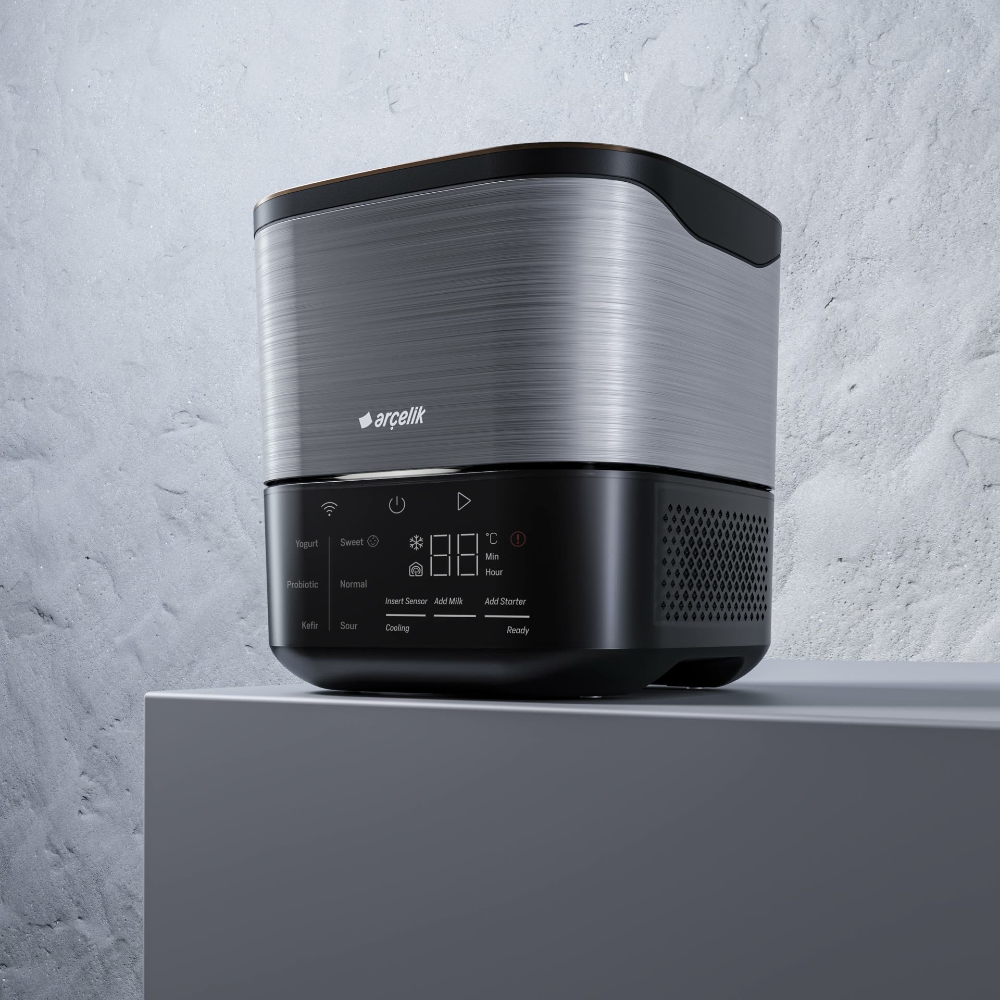
Project plan
From concept test to final flows
The programme ran in nine numbered stages — opening with external research and a benchmark, moving through ideation and the physical panel UI, and closing with the connected app and a final round of flows for the next prototype.
-
01
Concept Test Research (External) + Benchmark
- Verifying the project idea.
- Getting more customer insight (Turkey only).
- Research on present user habits and overall yogurt making processes.
- Exploring similar products on the market.
-
02
Ideation Workshop (Internal)
- Ideation session against pre-defined personas, supported by insights from the Concept Test Research report.
- Evaluating primary features and defining the final inventory list.
-
+
Yogurt Consumption Habits Research
- More information on yogurt consumption — this time across six countries.
-
03
Designing initial UI drafts & alternatives for the physical product
- Creating various alternatives for the given UI panel dimensions.
-
04
Finalizing first round of UI
- Supporting the UX Research team with the data required for the first prototype.
-
05
Supporting user testing sessions (10 women, 45 min. each)
- Defining and validating scenarios for the testing sessions with the UX Research team.
-
06
Evaluating outcomes
- Evaluating the results of the user testing sessions and defining the future action plan with the PM, R&D and UX Research teams.
-
07
Refinements
- Re-evaluating the UI and preparing the necessary technical documentation for the next prototype.
-
08
HomeWhiz App
- Defining connectivity flows and features according to the previously defined product feature set.
-
09
Finalising
- Finalizing product and app flows for the next prototype and its user testing.
Step 01
Consolidating the research, the flows and the earlier panel alternatives.
-
01
Analyzing data
Research reports, benchmark reports, consumer habit reports, the user journey workshop output and the personas that came out of it.
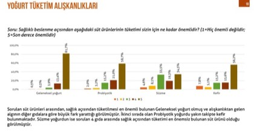
Consumption habits survey 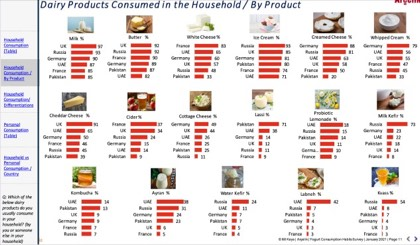
Consumption by product, by country 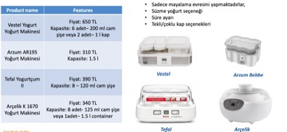
Competitor benchmark 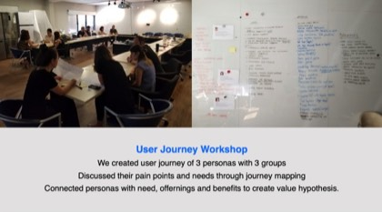
User journey workshop 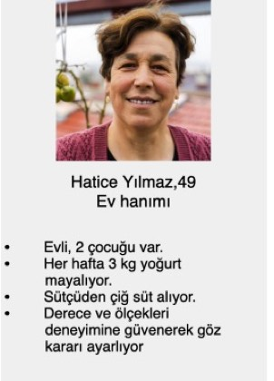
Personas 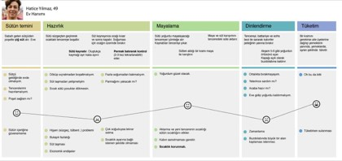
Journey map, with pain points -
02
Flows
Mapping the flows that already existed, for both the device and the yogurt making process itself.
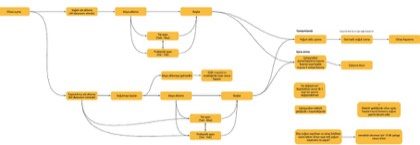
Device algorithm 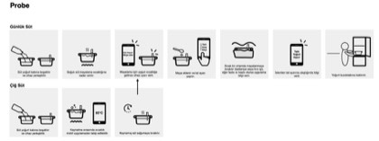
Probe sequences 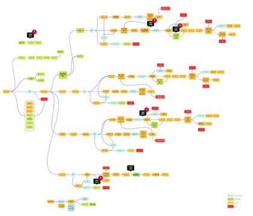
Full process board -
03
Past alternatives, and the decision making behind them
The earlier panel designs — and, more usefully, the reasoning that produced them. The alternatives on their own only show what was chosen; knowing why narrowed down which decisions were still worth reopening.
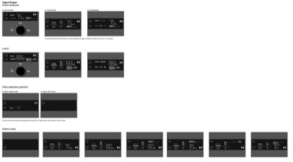
Panel alternatives & layout 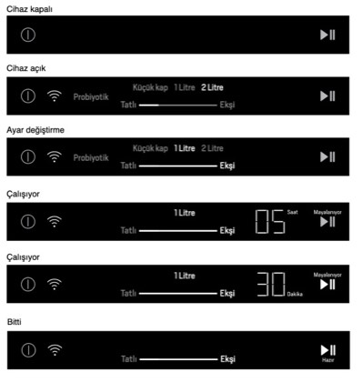
Panel states, off to finished -
Final UI for the very first prototype
First User Testing
User testing sessions
First round of testing went in front of ten participants, 45 minutes each. Their words are more useful than any summary of them — "add starter" read as a button rather than an instruction, people didn't realise they then had to press play to begin fermenting, and the cooling stage before and after fermentation wasn't understood at all.
Everything in Step 02 is answering this.
Step 02
Revising flows.
The first round of flows described device algorithms and device UI panels — accurate, but framed entirely from the appliance's point of view. Making yogurt isn't a thing that happens on a panel. It happens over hours, across a person, a machine and a phone.
So I widened the frame: a single flow showing the user, the device and the app interacting together, including the waiting, the ambient light states, the buzzer, and the moments where the app has to speak up because the person has walked away.
-
01
First flows: device algorithms & device UI panels
Complete and correct — but written entirely in the appliance's terms.
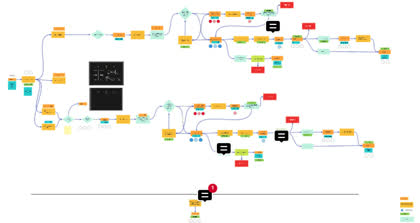
Device algorithm flow 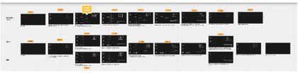
Device UI panels, state by state -
02
Adopting a more holistic approach
A flow showing user + device + app interaction from a wider perspective.
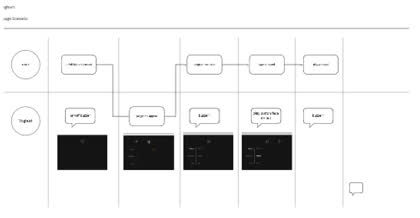
User against device, moment by moment 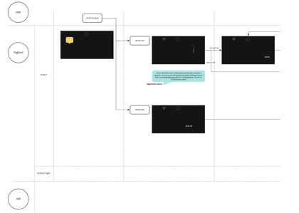
Interface, ambient light and hardware lanes -
Refined Final Flow
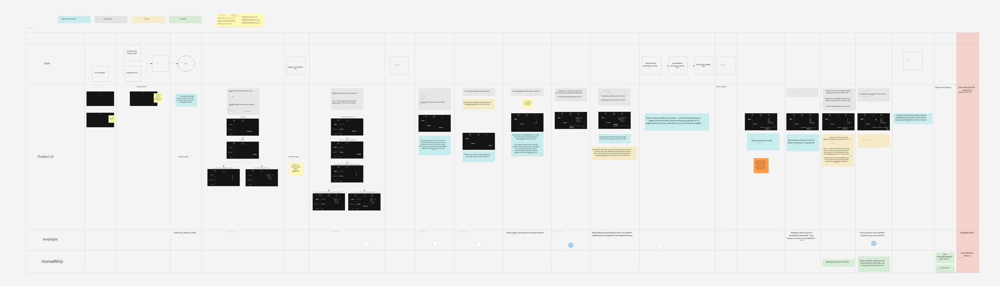
Final flow — user, product UI, ambient light and HomeWhiz as parallel lanes.
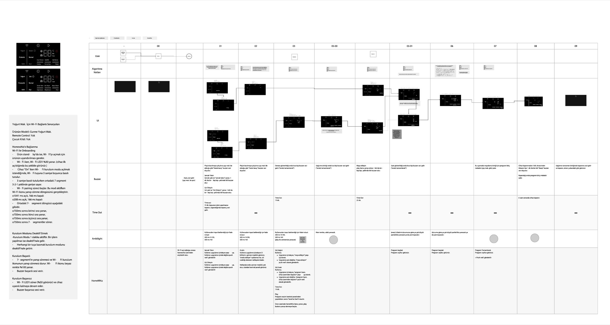
Wi-Fi connectivity scenarios, mapped stage by stage across every channel the product speaks through.
Step 03
Designing the app: HomeWhiz.
With the flows settled, the app work started from an inventory list and a set of requirements — connectivity, welcome and first use, what the panel shows before a program is sent, what it shows while running and once finished, graphs and history, user input, and replenishables.
From there I defined the app anatomy so it sat correctly inside the wider HomeWhiz experience rather than as a one-off screen set: a Control Panel for setting a program up, a Program Started state for following it, and an Assisted Guide for the parts where the person has to do something physical.
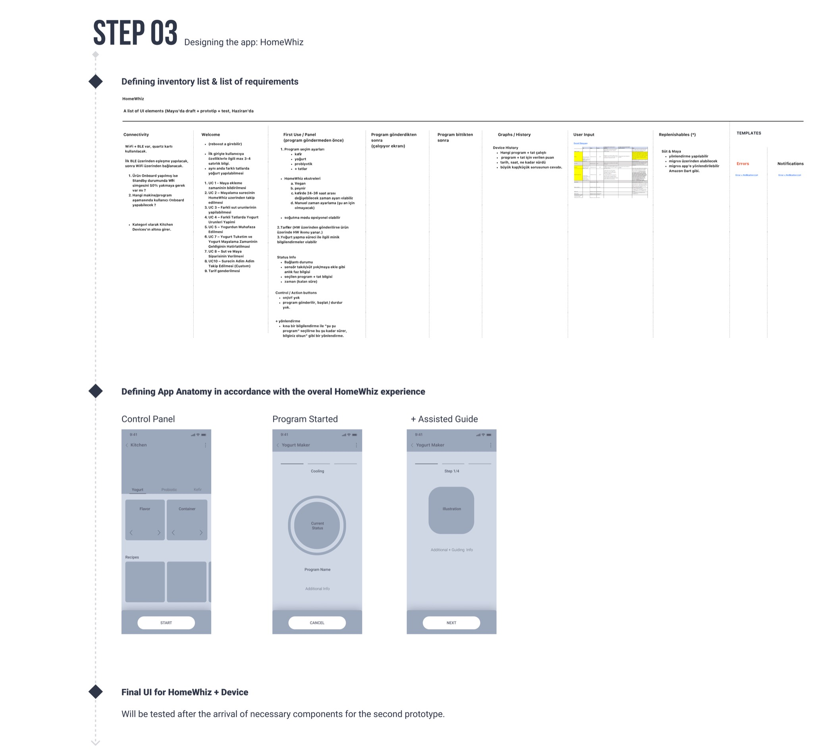
The final UI for HomeWhiz and the device was set to be tested after the components for the second prototype arrived.
Prototype
The device and the app, together
The two halves only make sense side by side — the panel on the appliance and the phone in your hand showing the same process from different angles.

What's next
Assisted Guide.
Step by step guidance for yogurt making
To help people experience yogurt making as playful and easy rather than fussy — insert the sensor, add the milk, and the app confirms each step as the device detects it, instead of asking anyone to guess.
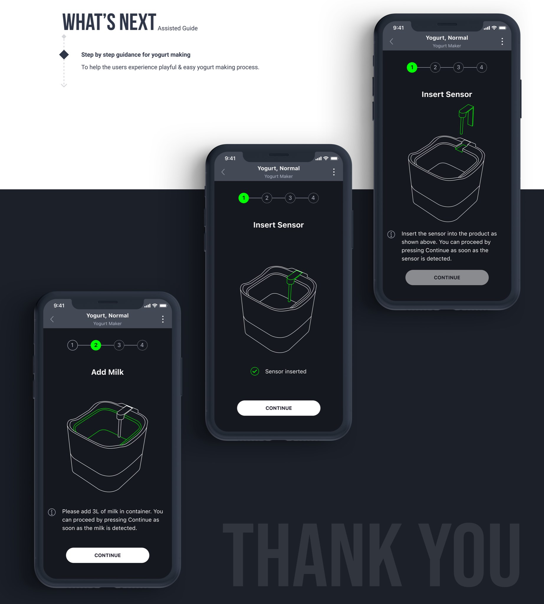
Recognition
iF Design Award 2022
The Gourmet Yogurt Maker went on to receive an iF Design Award in 2022.
Back to the project overview